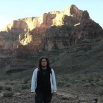
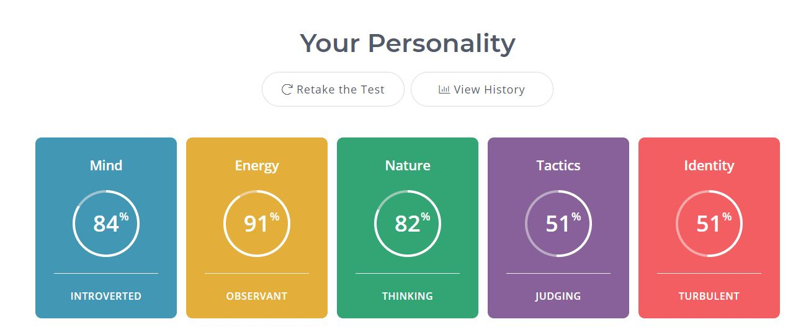
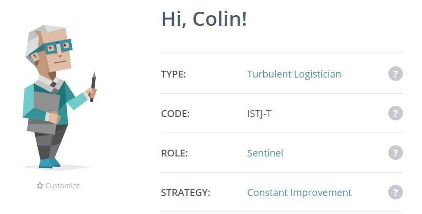
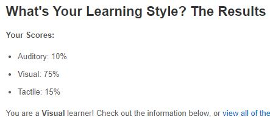
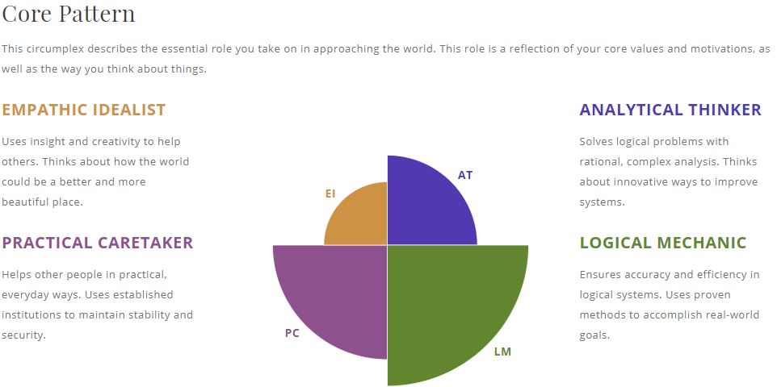

My name is Colin Bruce Stock, I was born in Ceduna, South Australia in 1992. My parents and Grandparents were all born in Australia except my grandmother on my mother’s side who was born in the Netherlands and came to Australia in the 40s. I have a little brother who is 4 years younger than me.
I grew up near the ocean in Ceduna and then when I was 8 years old, we moved to the Sunshine Coast in QLD. We were never more than a 10-minute drive away from the beach and my dad loved taking us surfing everyday even though I wasn’t too fond of it.
While I lived in the Sunshine Coast, I graduated high school in 2009 and instead of going to University I decided to look for a job, I managed to get an apprentice baker position which I enjoyed and spent the next 11 years working as a baker.
I only speak English but one of my favourite hobbies is watching anime. I usually watch them in subbed mode because the Japanese voice actors are usually better quality. I personally have never had a pet or been much of an animal person but my parents owned a dog when I was younger that I loved his name was Woofy he lived for 14 years from when I was around the age of 2 till 16.
My favourite pastime since I was young has been video games, since 2007 I have played a game called World of Warcraft. Over the years I have taken breaks here and there but consistently my entertainment of choice is MMORPGs. As of the last year I have been playing Final Fantasy 14 another MMO.

A fact about myself that people may find interesting would be that I travelled to America in 2012 to meet some of the people I played World of Warcraft with. When I was there, we travelled around Tennessee where a bunch of them lived. I then proceeded to Vegas and saw the Grand Canyon, afterwards I travelled to California and spent a week at Disneyland with some of the friends I made online. I think it’s interesting that I could play a video game sitting at home in Australia and make lifelong friends with people that live 1000s of kilometres away and across the ocean.
This experience of meeting and befriending people that live in other countries in a virtual world is where my interest in IT first started. It fascinates me to this day that you can pick up a device that fits in your pocket and you can talk to anyone in the world. IT is changing the world dramatically from the way we travel and communicate with each other to the way business is run. I have always wanted to get into IT but every time I would look into it, I would get overwhelmed and just play games and continue working as a baker even though I hated it in the last couple years of baking.
I chose to enrol in university because I lost my job, I had not been happy working for the last few years and I knew I needed a change but I had a job and it was easier to keep working than make a massive change in my life. I was lazy and content to just keep working a job I hated than to start again in a new profession. After I lost my job though I thought long and hard about what I wanted to do with my life.
I had wanted to change my career for a while and had even looked into teaching myself coding but I had no idea where to start and I need structure to learn things. Throughout this bachelor of IT, I am hoping to be able to learn a lot of information about the IT profession and start my new career path in the IT industry. As I learn more, I hope to narrow down which part of the IT world will be best for me. Also, when I finish, I will have a recognised certificate that can help me get the job I need to progress to the job I want in the future.
My ideal job may change throughout this course but I am currently interested in cybersecurity. My dream job would be Senior Penetration Tester I have found a job advertisement for this and whilst currently I am extremely unqualified, I can start working towards getting the required skills and experience to apply for a job like this one. A link to the job advertisement here
This position would require me to work as part of a team to conduct security tests and consult with clients on the results and how to improve their cyber security. I would also be required to provide security assessment and awareness training to the clients as well as various other tasks. Being able to stay up to date with technologies and effectively utilise them when conducting security tests is interesting to me, also working in a team, and with people I will be training is very appealing to me. Being stuck in a boring job where you do the same thing every day is a fear of mine but I think this job would remain interesting and challenging over a long period of time.
The experience and skills I would need to successfully do this job include 8 years IT experience including 5 years of security assessment and penetration testing services. A broad knowledge of fundamental IT/Networking skills as well as experience with Incident response engagements. Various industry certifications will help me distinguish myself from other candidates applying for this job as well as experience and knowledge of ISO27001. Also, good communication skills and confidence as I will be required to present findings and business risks to stakeholders as well as conducting awareness training to the stakeholders of the company.
Currently I am completely unqualified for this job, I don’t have any experience working in the IT industry and I have none of the industry certifications or any in depth knowledge of ISO27001. I do have 11 years of experience working within a team and serving customers at a bakery.
Currently I have no qualifications or experience in IT, the first step I am taking towards this job would be completing my bachelor of IT. However, whilst I am working towards completing this bachelor, I am currently looking for an entry level IT position. This could be helpdesk job or even an unpaid internship at an IT company.
When I graduate, I hope to at least have 2 years' experience in an entry level job and either try to transfer to a junior security position in the company I worked for or find a junior security position to apply for. I will gain experience and industry related certificates as I work hopefully leading to promotion opportunities within the company I work for. After several years of working, I hope to be in a senior role or looking for a job with a senior role. Networking while I am at university and later at work will hopefully present me with more opportunities to take advantage of.
The results of my first test the Myers-Briggs test was ISTJ-T which means Introverted, Observant, Thinking, Judging and Turbulent. The type of personality was turbulent logistician, the role I am is Sentinel and the strategy I am is Constant Improvement.
 The results of my second test the online learning style test was that I am a visual learner. The break down I got was Auditory 10%, Visual 75% and Tactile 15%. This was done on the website education planner. click to go to the edcation planner website
The results of my third test which was the big five personality test are as follows, Openness 25%, Conscientiousness 46%, Extraversion 10%, Agreeableness 37.5% and Neuroticism 58%. This was done on the website truity click here
What do these results mean to me, these results have shown me the strengths and weaknesses of my personality I can use this information to actively try to improve and be aware of what might be holding me back. Also, with the result of the learning style test I can tailor my studying at university and in the future to lend towards that. Reading books, watching videos and using visual graphs and other means to study will be more effective for me.
According to these results I tend to like working by myself rather than in a team which is true however, I can work well in a team with a hierarchy setup and an achievable goal where everyone knows what their objective is in the team, so when I work in teams, I should strive to help setup a working system for everyone to know what we are all doing individually and what are goal is as a team. I also know that my personality type tends to upset others by being too blunt so moving forward when interacting with team members I can consciously think about what might upset others if said and think of ways to say it that won’t cause conflict and drama.
Taking into account my personality and how I will work with others when forming a team, I should have a goal in mind for the team and a general plan for what I expect of the team. Then when I form a team, I can give a general idea to the people joining of what to expect, hopefully finding people that are motivated and like to have structure in a team environment. When the team is formed making sure we can discuss and agree on clearly defined roles within the team and a good plan before moving forward. I should also try to find team members who can trust and respect each other this will lead to the members being able to give and take constructive criticism which to me is very important.